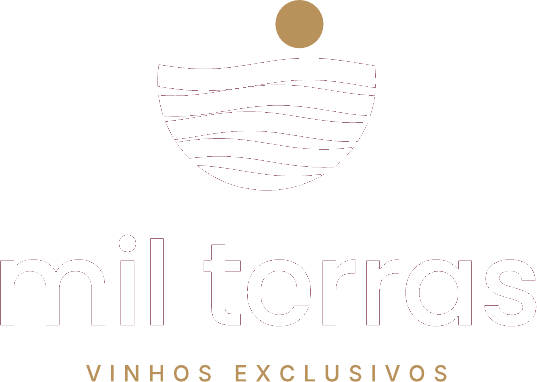
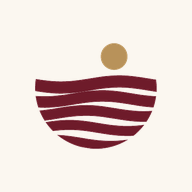

Vinhos italianos em consignação, do depósito à mesa.
Mil Terras Gestão
Para a distribuidora: estoque central, consignação nos parceiros, fechamentos, financeiro e inteligência.
Abrir

Mil Terras Parceiro
Para restaurantes, bares e lojas: registrar vendas, relatórios por vinho e garçom, fechamento e reposição.
Abrir
Abra os dois apps em abas diferentes: o que o parceiro envia aparece na hora para a Gestão.
No iPhone: Safari › Compartilhar › Adicionar à Tela de Início.